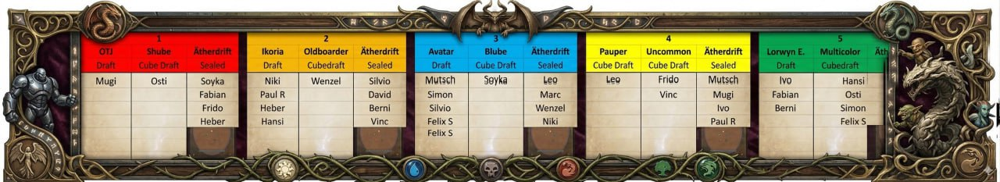

Pick-Craziness total

Der SG6-Draft zum Seat-Picking für die ersten zwei Tage ist im vollen Gange – und die Ereignisse überschlagen sich.
Der Schocker: Die Top 4 im Eternal Ranking sitzen alle im selben Pod 2 und dodgen damit Oldboarder Cube und Ikoria. War das so gewollt? Burni, the Voracious Weeder, weinte bereits im Chat. Wohl eher nicht. Das bedeutet nun leichteres Spiel an den anderen Tischen – sofern sich die Top 4 im Sealed-Event nicht gegenseitig zerfleischen.
Felix, the Great Conceder, der Titelverteidiger, wählte im Gegensatz dazu Table 5 fürs Sealed-Spiel und dodgte damit den gefürchteten Multicolor Cube.
Noch mehr Angst scheint die Spieler vor dem berüchtigten Blube zu haben. Hier kennen sich die wenigsten wirklich aus. Kein Wunder: Wegen seiner Komplexität wurde er aus dem Gehirn der Slaughter Games und ihres Founding Fathers gebaut – nur wenige verstehen ihn. Saint Slow Paul III zeigt dagegen „no fear“ und stürzt sich in den blauen Morast.
Schnell füllen sich die Plätze nun für den Draft in der Avatar Edition. Hier scheint bei einigen eine dicke Brust zu wachsen. Der Multicolor Cube ist noch unbesetzt, dafür ist Ikoria offenbar beliebter, als es zunächst aussah.
Die Spannung wird immer größer: Wer landet am Schluss dort, wo er hinwill – und wer fällt genau da rein, wo er auf keinen Fall hinwollte? Wir werden es sehen.